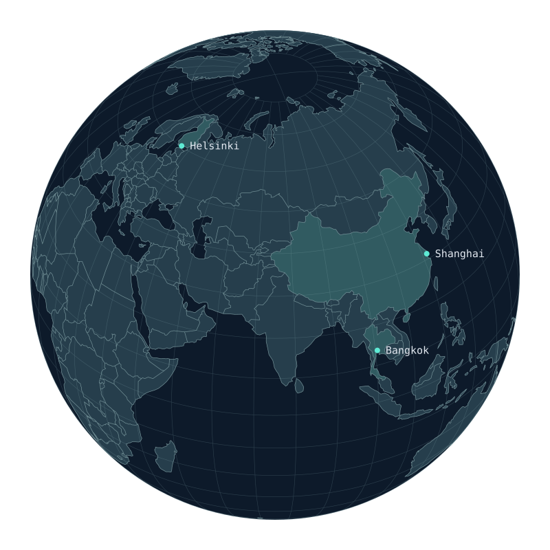

Index / Explore further
Think. Build. Ship.
From intent to impact
Human intent.
Engineered into software.
Places / A personal atlas

Interactive Earth with Shanghai, Bangkok and Helsinki. Use the arrow keys to rotate.Based in Helsinki.
Building AI and software.
Interactive map unavailable. You can still explore the city cards.
Index / Explore further
Think. Build. Ship.